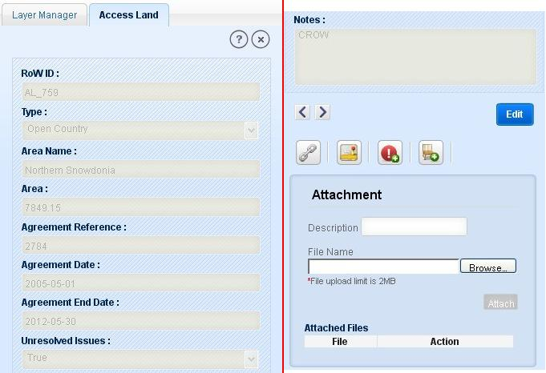
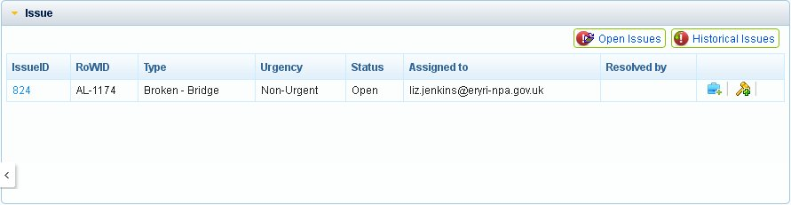
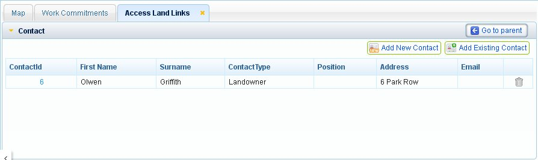
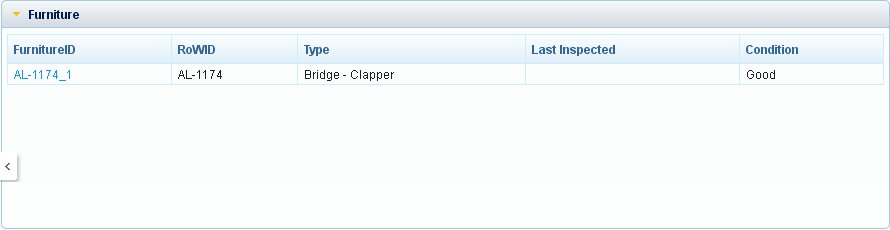

Under Access Land module user is allowed to view the access land details, current as well as historical. User can create furniture and issue on access land. The functionalities for access land are described below:
In this functionality, user is allowed to view detailed information of a selected access land.
User can select an access land by Search/ Query Builder/ Select Feature/ Select by Rectangle/Select by Polygon.
Selected feature/features are displayed in result panel.
Now select the required record from result panel and click on ‘Detailed Info’ tool on top of result panel.
Application opens new tab ‘Access Land’ in left panel with the detailed information of selected access land in read only format. The access land information includes attributes as shown in figure below:

Fig.1 Access Land Information
This functionality allows user to edit access land attributes as detailed in the steps below:
User clicks on ‘Edit’ button on access land information tab.
Application changes the attributes to editable form excluding some of the fields like RoW_ID and Area with two buttons ‘Cancel’ and ‘Save’.
After doing the required changes in attribute fields, click on ‘Save’ button. User can discard all the changes by clicking on Cancel button.
Application saves the changes by creating the old records as historical details and the changes will be saved as current details of access land.
On saving the changes application displays message as “Data Saved”.
Now user can view the old details as historical details by clicking on ‘Previous’ button.
This functionality allows users to view historical survey details of a selected access land:
Click on ‘Previous’ tool present on Access Land tab.
On clicking ‘Previous’ tool application shows the historical details previous of current details of selected access land in left panel if exists.
Otherwise application displays message “No Historical Records”.
The Historical details of the access land cannot be edited, user can just view historical details. The Previous tool allows user to traverse through the historical details of selected access land till oldest historical details.
After first historical details, if user clicks on ‘Previous’ tool, application shows the message as “No Historical Records”.
Now to view later version of the access land details, click on ‘Next’ button. As user reaches to the latest version, application displays message as “No More Records”.
This tool allows user to view furniture, issues, contacts and path details related to a selected access land.
Select an access land and click on detailed info tool.
Click on ‘Access Land Links’ icon on Access Land tab. Application opens a new tab ‘Access Land Links’ on map window. This window consists of the accordions: Issue, Contact, Furniture and Path Detail.
Click on ‘Go to Parent’ button, application shows the access land details on left panel if access land details tab is closed.
To go any of the five accordions just click on that accordion.
These accordions are described below:

Fig.2 Access Land Links with Issue details
Issues
As user clicks on Issue accordion, application expands the accordion with the list of all open issues (if exists) in tabular format for selected access land. This accordion has two buttons ‘Open Issues’ and ‘Historical Issues’.
User can view the issue details by clicking on the RoW ID of the issue.
Click on ‘Create/View job’ icon in last column action, application displays job details if already created otherwise displays a blank form to create job for that issue.
Similarly if user clicks on ‘Create/View Legal’ icon in last column action, application displays legal details if already created otherwise displays a blank form to create legal for that issue.
Contact
Contact part contains the list of contacts of SNPA contractors related to Access Land. Here user is allowed to add new contact to Access Land and select a contact to add to access land from the contractor’s existing list.
User clicks on a Contact accordion, application expands contact tab with the tabular list of contacts related to selected access land. Top of this tab two buttons ‘Add New Contact’ and ‘Add Existing Contact’ is also there.

Fig.3 Contacts related to selected Access Land
To view detailed information of a contact, click on ContactID of a record.
In the last column of the table a tool ‘Delete’ exist to delete the contact record.
To add a new contact to selected access land, click on Add New Contact Button or to add a contact from existing list, click on Add Existing Contact button.
Furniture
In furniture section user is allowed to view the furniture list on the selected access land.
User clicks on ‘Furniture’ accordion, application expands the list of all furniture related to the selected access land in tabular format.

Fig.4 Furniture on selected Access Land
To view detailed information of a furniture record from the list, click on FurnitureID of that record.
Path Details
In this section user can view the information of paths those intersects with the selected access land.
Click on Path Details option, application expands the accordion with the tabular list of all paths intersecting with selected access land.
Click on RoW ID of a path to view its detailed information. Application opens the path details in left panel as Path Information tab.
With this functionality user is allowed to zoom to selected access land from the detailed information of the access land. Click on ‘Locate on Map’ tool on Access Land tab. Application zooms to the selected access land on map canvas with highlighting it.
This functionality allows user to create furniture on an access land. To create furniture on an access land, follow the steps:
Select an access land and open its detailed information with Detail Info tool in result panel.
Click on Create Furniture tool. Application opens Editing tab in left panel with furniture as editable layer.
Click on Create link and select point tool.
Now click on selected access land at required location. Application expands Edit Attribute link with all the furniture details.
Fill all the details and click on ‘Apply’ button. Application displays message “Click on Save button to save the Furniture”.
After clicking Ok on message, click on ‘Save’ button in general editing tools.
Furniture will be created on the clicked location on access land (linking the furniture to access land).
If user clicks on a location other than selected access land application displays message “No Access land found at this location”.
User is allowed to mark an issue on access land under this functionality. To create an issue over an access land:
Select access land and view its detailed information in Access land tab.
Click on ‘Create Issue’ button. Application opens editing tab in left panel with Issue selected as editable layer.
Click on Create link in editing tab and select point tool from Create part.
Click on map over access land at required location. If user clicks at a location other than selected access land application displays message “No Access land found at this location”.
On clicking over access land, application expands Edit Attribute link with all the issue details.
Enter the values for all the fields. Click on ‘Apply’ button. Application displays message “Click on Save button to save the Issue”.
Click ‘Ok’ and save the issue by clicking on ‘Save’ button in general editing tools. Application displays the issue on access land.